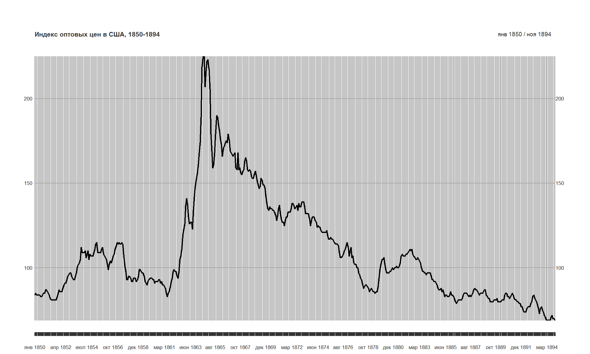

- понять, что такое деньги
- понять, как мы используем деньги
- понять, как мы измеряем деньги
- рассмотреть основные аспекты денежно-кредитной политики
- понять политику Банка России
2017-01-27
Цели лекции
Деньги и их функции
- Деньги – это актив, который повсеместно принимается в качестве средства платежа за товары и услуги или выплаты долга.
- Существует разница между доходом (income) и состоянием (wealth).
- Доход – поток платежей в течение периода времени (скажем, месяц или год).
- Состояние (богатство) – это сумма стоимости активов минус обязательства (долг).
Функции денег – средство платежей
- Средство платежа – с помощью денег удобнее и легче обеспечивать расчеты (сравнение с бартером), не возникает дальнейших требований к продавцам или покупателям.
Не возникает дальнейших требований к продавцам или покупателям – деньги "финализируют" расчеты.
Функции денег – средство платежей
- Мера измерения – деньги это стандарт стоимости, так как используются для установления цен на товары (и размера долга). Цены обеспечивают информацию для эффективного распределения ресурсов. Рублевые цены облегчают относительное сравнение цен. Использование денег снижает транзакционные издержки, что позволяет повысить производительность в экономике.
К примеру, если в экономике используется \(n\) товаров, то в экономике бартера каждый человек должен знать \((n^2-n)/2\) соотношений между этими товарами. С использованием денег необходимо знать только \(n-1\) соотношений.
Функции денег – сохранение стоимости
- Сохранение стоимости – деньги обеспечивают "перенос" стоимости во времени. Деньги постепенно терют стоимость, но принимаются повсеместно. Другие формы хранение стоимости - физические активы, ценнные бумаги проч.
Ликвидность – это мера, которая оценивают легкость, с которой актив может быть превращен в средство платежа.
Деньги – мера относительной ликвидности
Платежная система
Варианты денег, которые можно использовать:
- Наличные деньги
- Деньги на банковском счету
- Иностранная валюта
- Электронные деньги (Яндекс-Деньги, Webmoney и проч)
- Цифровые деньги (Bitcoin)
"Обеспеченные" и бумажные деньги
Commodity money (обеспеченные деньги) – это деньги, которые имюет внутреннюю стоимость. Примеры - соль, шелк, пушнина, золото. Обеспеченные деньги были исторической нормой.
Бумажные деньги появились из-за того, что властям не хватало денег для финансирования войн (первое появление - 1656 год, Швеция). Однако люди относились недоверием к бумажным деньгам.
В конце 19 века - начале 20 века большинстсва стран придерживалось золотого стандарта - гарантированного обмена банкнот на золото, то есть деньги обеспечивались запасами золота.
Сейчас деньги как правило не имют внутреннего обеспечения. В конечном счете, деньги – это про доверие.
Золотой стандарт
Золотой стандарт был установлен только примерно с 1870-х годов, до этого времени страны использовали биметаллическую систему (золото и серебро).
Удобство биметаллической системы: золото – для крупных операций из-за его дороговизны, серебро – для повседневных операций. Проблемы – сложность в поддержке постоянного соотношения между золотом и серебром. Изменение относительных цен на золото и серебро создает арбитражные возможности и приводит к выводу той или иной монеты из обращения.
Товарные шоки в середине 19-ого века привели к тому, что биметаллические системы стало еще сложнее поддерживать. Усиление экономической мощи Великобритании способствовало тому, что и другие европейские страны перешли на золотой стандарт –- фиксирование курса национальной валюты к определенному соотношению золота.
Как работает система золотого стандарта?
Выравнивание внешних дисбалансов происходит автоматически за счет перемещения непосредственно золота из одной страны в другую.
Страна, находящаяся в положении дефицита по торговому (текущему) счету, столкнется с оттоком золота, которое импортеры будут вывозить из стран, конвертируя национальную валюту в золото.
Это автоматически приведет к сокращению денежного предложения. Власти будут вынуждены повысить процентную ставку (дисконтное окно), что в свою очередь привлечет капитал и позволит сократить дисбалансы.
Обязательным условием функционирования системы золотого стандарта являются а) гибкие цены, в том числе и на труд (!) б) обязательная приверженность властей страны поддерживать фиксированный курс, даже в условиях сильного экономического спада.
Формально первая система золотого стандарта распалась с началом Первой мировой войны, однако фундаментальными причинами стали демократические преобразования – готовность элит поддерживать курс сильно уменьшилась.
Инфляция при золотом стандарте

Фундаментальные проблемы золотого стандарта
- Когда центальный банк фиксирует цену золота в экономике, а не цены товаров и услуг, которые мы потребляем, то колебания в цене товаров заменяют рыночные колебания в рыночной цене золота.
- Так как цены связаны с количеством денег в экономике, которые в свою очередь связаны с объемом предложения золота, то получается, что инфляция зависит от изменения добываемого золота.
- Если золотой стандарт используется в нашей экономике и зарубежной, то это означает такую валютную политику, в которой международные транзакции должны осуществляться за счет перемещения золота.
- Выкапывание золота из одного места (шахта) и перемещение его в другое место (сейф) – непроизводительное использование ресурсов.
Колебания в инфляции при золотом стандарте

Источник: Federal Reserve Bank of Minneapolis
Деньги и создание кредита
- В современном мире власти устанавливают стандарты определения денег, при которых центральный банк имеет монополию на денежную эмиссиию.
- Есть два типа денег: денежная база, которая выпускается центральным банком, и денежная масса, которая включает деньги, созданные банковской системой. Денежная масса - по факту это денежная база и некоторые депозиты.
- Деньги "создаются" не только центральным банком, но и банковской системой!
Измерение денег
Различные определения денег используются в зависимости от степени их ликвидности
- М0 – наличные деньги в обращении вне банковской системы
M1 – M0 + остатки средств в национальной валюте на расчетных, текущих и иных счетах до востребования населения, нефинансовых и финансовых (кроме кредитных) организаций.
M2 – M1 + остатки средств в национальной валюте на счетах срочных депозитов и иных привлеченных на срок средств населения, нефинансовых и финансовых (кроме кредитных) организаций
Денежная база в широком определении
Денежная масса – национальное определение РФ
Денежные агрегаты России
Инфляция
- Изменение количества денег в экономике может быть связано с разными факторами, в том числе – уровнем процентных ставок, экономическим ростом и инфляцией.
- Инфляция определяет скорость, с которой растет уровень цен. В условиях инфляции необходимо иметь большее количество денег, чтобы купить аналогичную корзину товаров и услуг, которую вы покупали год назад.
Деньги и инфляция
"Inflation is always and everywhere a monetary phenomenon" – Милтон Фридман. Основная причина инфляции – слишком большое количество денег.
Инфляция и экономический рост
Денежная политика нейтральна в долгосрочном плане, то есть не влияет на реальные показатели (выпуск, занятость и проч.), а оказывает влияние лишь на номинальные – инфляция, заработная плата, валютный курс.
В краткосрочном плане денежная политика способна оказать влияние на реальные показатели, так как экономические агенты сначала не могут различить номинальные и реальные эффекты (эффект money illusion). Однако этот стимулирующий эффект носит временный характер.
Существует эмпирическая поддержка тезиса о нейтральности денежной политике.
Роль и функции центрального банка в современной экономике
Центральные банки возникли как банки правительства (в первую очередь, для финансирования войн), однако постепенно расширяли свои функции. Современный центральный банк оказывает услуги не только правительству, но и коммерческим банкам.
ЦБ обычно имеет монополию на выпуск денег в национальной валюте. Эта монополия означает, что ЦБ может влиять на количество денег и размер кредита в экономике.
Основная задача ЦБ заключается в улучшении общественного благосостояния за счет снижения и эффективного воздействия на систематический риск.
Функции современного ЦБ
- Изменять краткосрочные процентные ставки, чтобы влиять на количество денег и размер кредита в экономике
- Управлять платежной системой
- Предоставлять кредиты платежеспособным финансовым учреждениям во времена кризиса
- Осуществлять надзор над финансовой системой
Задачи ЦБ
- Центральные банки работают над тем, чтобы снизить волатильность экономической и финансовой системы за счет следующих специфических задач:
- Низкая и стабильная инфляция (ценовая стабильность)
- Высокие и устойчивые темпы экономического роста - вместе с низкой безработицей
- Устойчивость и стабильность финансовой системы
- Стабильность процентных ставок
- Стабильный валютный курс
Ценовая стабильность - задача №1 для ЦБ
- Стоимость рубли или доллара определяет стандарт стоимость в экономике.
- Цены являются центральным элементом в рыночной экономике, так как ценовые сигналы обеспечивают распределение ресурсов с целью их наиболее производительного использования.
- Изменчивая инфляция искажает ценовые сигналы (почему произошло повышение цены?)
- Устойчивая ожидаемая инфляция дает возможность агентам учесть фактор изменения уровня цен
- Высокая инфляция как правило менее устойчивая
Почему нулевая инфляция это плохо?
- Нулевая инфляция может перейти в дефляцию (снижение цен)
- Дефляция увеличивает реальную стоимость долга
- Нулевая инфляция ограничивает возможность адаптации рынка труда из-за "жесткости" трудовых контрактов
Почему большая инфляция это плохо?
- Производители не могут "в моменте" определить цены на их продукцию растут из-за того, что вырос спрос или это только инфляцию.
- Увеличивается неопределенность для всех, не имеет смысла принимать долгосрочные решения.
- Изчезают стимулы для сбережения -> ухудшаются условия привлечения финансирования.
Экономический рост - задача №2 для ЦБ
- Экономика развиваюется циклами, в которых периоды быстрого роста перемежаются периодами спадов (рецессий)
- Деятельность центрального банка может помочь "сгладить" эти циклы, стабилизируя экономический рост и безработицу
- Потенциальные темпы роста определяются уровнем развития технологий, размером накопленного капитала (оборудования), размерами рабочей силы и прочими факторами. В отдельные периоды темпы роста могут отклоняться от потенциальных - ЦБ может влиять на эти отклонения.
- В период спада ЦБ может снизить процентные ставки для того, чтобы уменьшить размеры спады. В период подъема ЦБ может повысить процентные ставки с тем, чтобы снизить темпы роста до устойчивых (и уменьшить размеры спада в будущем)
- Стабильность в экономике обеспечивает более высокие темпы роста в будущем. Нестабильность увеличивает риски для всех, риск компенсируется более высокими процентными ставками. С более высокими ставками, агенты сокращают размер кредита и размер своих расходов.
Потенциальные темы роста для экономики РФ

Финансовая стабильность - задача №3 для ЦБ
- Финансовая система обеспечивает посредничество между сберегающими и кредитующимися агентами в экономике
- Кризис в финансовой системе приводит к остановке процессов посредничества и ограничивает кредит - влияет на экономику в целом.
Условия для эффективного ЦБ
- Независимость ЦБ
- Коллективный процесс принятия решений
- Информационная прозрачность
- Открытость проведения политики и понятость целей
- Ответветственность ЦБ за принятые решения
Денежно-кредитная политика и бюджетная политика
- ДКП и бюджетная политика связаны между собой, в особенности, если правительство необходимо финансировать бюджетный дефицит.
- Значительный дефицит бюджета угрожает выполнению всех задач ЦБ
- Правительство может оказывать давление на ЦБ с тем, чтобы помочь финансировать дефицит
- Конфликт между бюджетной политикой и задачами ЦБ привел к развитию концепции "независимого центрального банка"
- Ответственная бюджетная политика является необходимым условием для проведения эффективной денежно-кредитной политики и выполнения задач центрального банка
Проблема time consistency
Thomas Sargent and Neil Wallace, “Some Unpleasant Monetarist Arithmetic,” Federal Reserve Bank of Minneapolis Quarterly Review, Fall 1981: Для того, чтобы обеспечить низкую инфляцию в долгосроной перспективе:
- институты должны решить проблему time consistency денежно-кредитной И бюджетной политики.
- бюджетная политика не должна доминировать над денежно-кредитной.
Противоречия в денежно-кредитной политике
- Цели и задачи политики, а также обеспечивающие их институты (правила) представляют собой framework денежно-кредитной политики.
- Противоречия между целями денежно-кредитной политики неизбежны, поэтому framework определяет вероятные шаги в случае возникновения между целями.
- Чаще всего возникает между конфликт между задачей ценовой стабильности и экономическим ростом.
- Агентам должны быть понятны приоритеты политики ЦБ
- Спланированный и устойчивый framework денежно-кредитной политики позволяет обеспечивать credibility.
Банк России - сегодня
- Ценовая стабильность формально является основной целью денежно-кредитной политики Банка России.
- Среднесрочная цель - обеспечение инфляции в 4% к 2017 году (в 2015 году инфляция составила 11,9%, в 2016 году - 5,4%)
- Основным инструментом является ключевая ставка. Фактически ключевая ставка - это ставка на недельных аукционах репо (репо - форма обеспеченного кредитования под залог ценных бумаг).
- C 2015 года Банк России придерживается политики инфляционного таргетирования. Это означает, что выполнение целей по инфляции является основной задачей политики.
- "Основные направления денежно-кредитной политики" - основной документ, который определяет текущие цели и задачи Банка России
Задания и вопросы -1
Вы – владелец небольшой кофейни. Ваши клиенты могут выбирать различные варианты оплаты покупок – наличные, дебетовая карта, кредитная карта. Какие из вариантов для вас наименее затратны? Почему вы можете принять решение сохранить более затратные (для вас) альтернативы?
Несмотря на все усилия правоохранительных органов, кто-то нашел дешевый способ производить денежные купюры, неотличие от банкнот Банка России. Какой эффект это событие произведет на экономику?
При каких условиях бартер может вновь возникнуть в современной экономике?
Задания и вопросы -2
- Вы приехали на тропический остров, на котором есть четыре типа товаров - апельсины, ананасы, кокосы и бананы. В этой экономике нет денег.
- Нарисуйте сетку с относительными ценами в этой экономике. Сколько их всего?
- Вождь племени предложил начать использовать апельсины в качестве денег. Сколько тогда цен будет? Имеет ли смысл начать использовать апельсины в качестве денег?
- Можно ли рекомендовать использовать бумажные деньги жителям этого острова? При каких условиях это возможно?
При каких условиях деньги является лучшей альтернативой для сохранения стоимости?
Что произойдет с темпами роста денежной массы при повышении процентных ставок в экономике?